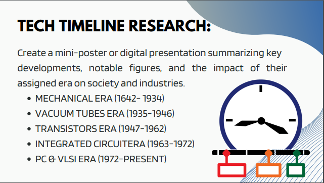
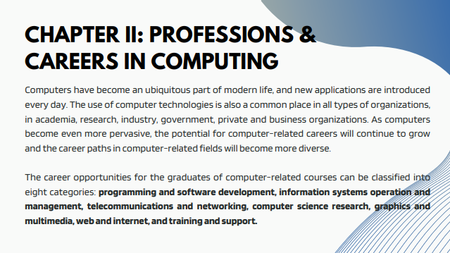
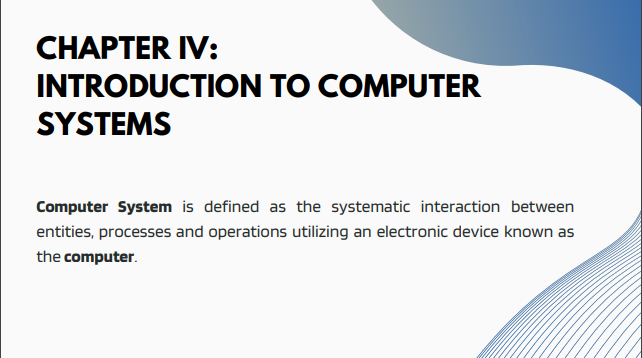

Learnings Every Lesson
- 
In lesson one, I learned about the use of computing and the different types of computers that evolved over generations.
- 
In lesson two, I have learned that there are different professions and careers in computing—computer-related courses.

In lesson three, the information processing cycle discussed processing, inputs, storing, and outputting information.
- 
In lesson four, we introduced the four computer components in computer systems, which are software, hardware, dataware, and peopleware.

In lesson five, the discussion is all about the basic concepts of computer security. It tackles data security, classifying information, some types of cybercrimes, and cyberattack countermeasures.

In lesson six, we discussed the internet and the world wide web. It talks about the different uses of the internet, services, and platforms.

Lastly, lesson seven is all about HTML and CSS, where HTML is the standard markup language for creating Web pages and is a simple design language that describes the style of an HTML document.